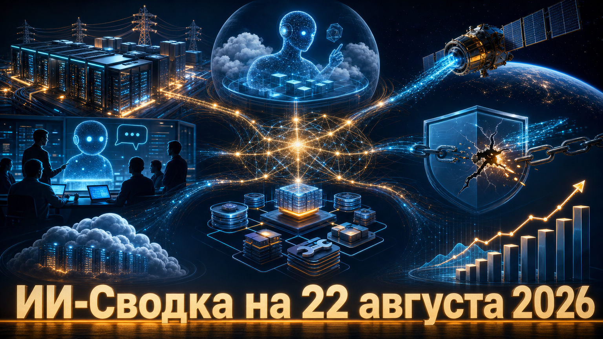

Повестка дня показывает, что конкуренция в ИИ всё заметнее идёт вокруг среды работы моделей: энергоподготовки дата-центров, облачных песочниц для агентов и системной обвязки, которая превращает LLM в исполнителей длительных задач. Одновременно рынок получает два важных сдерживающих сигнала: безопасность агентного runtime зависит от обработки внешнего контента, а заявленные контентные ограничения модели могут обходиться многошаговыми jailbreak-запросами.
Китайский сегмент подтверждает, что коммерциализация ИИ опирается не только на выпуск моделей: Alibaba одновременно наращивает выручку облачных ИИ-сервисов и капитальные расходы на вычислительную инфраструктуру.
Nvidia объявила о партнёрстве с Cloverleaf Infrastructure, которая готовит энергоснабжение и другую критическую инфраструктуру для площадок дата-центров. Как сообщает TechCrunch со ссылкой на Reuters, Nvidia получила миноритарную долю в компании; точная сумма и условия сделки не раскрыты.
Это ещё один пример прямого участия производителя ускорителей в физическом слое ИИ-вычислений, а не только в продаже чипов. Для рынка важны готовые площадки с доступной мощностью: именно они всё чаще становятся ограничением для новых кластеров. Однако оценивать масштаб сделки пока нельзя — публично подтверждён только факт партнёрства и миноритарной инвестиции.
GitHub вывел в публичный preview работу с Copilot cloud agent прямо в Microsoft Teams и Slack. В Teams команды могут упоминать @GitHub в обсуждении, направлять агентную сессию, поручать ей исследование или изменение кода и получать draft pull request; выполнение идёт асинхронно в облачной песочнице, следует из анонса GitHub.
Интеграция переносит постановку и контроль задач агенту ИИ из IDE в обычные каналы инженерной коммуникации. GitHub сохраняет человеческий контроль: для созданных агентом pull request предусмотрено дополнительное обязательное одобрение. Это пока preview, а доступность и биллинг различаются между Teams и Slack, поэтому нововведение не стоит считать полностью унифицированным корпоративным продуктом.
NVIDIA представила Agentic Variation Operators, или AVO, — архитектуру для длительных агентных задач с постоянной памятью, использованием инструментов и supervising-компонентом. В техническом блоге NVIDIA компания заявила, что система с Claude Opus 5 прошла все 183 уровня в 25 средах публичного набора ARC-AGI-3 и получила 100,00 RHAE.
Главный вывод относится не столько к одной базовой модели, сколько к agent harness: память, управление инструментами и надзорный слой могут существенно менять результат на интерактивных задачах. NVIDIA отдельно предупреждает, что это не контролируемое сравнение компонентов и что результат относится только к публичной части набора, а не к скрытым тестам. Поэтому это сильный исследовательский сигнал, но не независимое доказательство универсального превосходства архитектуры.
TechCrunch сообщил, что воспроизвёл многошаговую технику jailbreak, при которой Claude Opus 4.6 выдавал сексуально явный контент вопреки публичным ограничениям Anthropic. Издание пишет о пяти отдельных воспроизведениях метода и о десяти успешных ответах на десять прямых запросов после обхода защит.
Сюжет важен, поскольку Opus 4.6 остаётся доступной через API и ряд сторонних платформ: корпоративным пользователям нельзя считать опубликованные поведенческие ограничения достаточной заменой собственных фильтров и контроля доступа. Это сообщение о контентной уязвимости, а не о компрометации систем или обходе защит в кибер- и биорисковых сценариях; основное свидетельство основано на тестах одного издания. По его данным, более новые Opus 4.7–Opus 5 описанному методу не поддались.
Starcloud сообщила о дополнительном финансировании на $250 млн к мартовскому раунду Series A; заявленная оценка компании после extension составила $2,3 млрд. Как пишет TechCrunch, раунд возглавила Manhattan West Ventures, среди участников названы Nvidia и Cisco. Деньги предполагается направить на производство и разработку аппарата Starcloud-3.
Стартап строит спутники для выполнения ИИ-инференса на орбите, то есть предлагает совершенно иной физический слой вычислений. Сам размер раунда и участие инфраструктурных игроков делают событие заметным, но массовая экономика орбитальных дата-центров пока не доказана: она зависит от стоимости и доступности запусков, производства спутников и реального спроса на такой инференс.
Alibaba отчиталась, что выручка направления AI Cloud and Compute Services за квартал апрель—июнь достигла 48,4 млрд юаней, увеличившись на 45% год к году. Капитальные затраты компании выросли на 75% до 67,7 млрд юаней; в них входят вложения в ИИ-инфраструктуру для обслуживания спроса, сообщает Associated Press.
Показатели дают один из наиболее крупных свежих индикаторов коммерческого спроса на ИИ-сервисы в Китае: облачная выручка и расходы на мощности растут одновременно. Alibaba связывает расширение вычислений с внедрением ИИ-продуктов и агентов клиентами, но продуктовые заявления компании не заменяют независимой оценки эффективности этих сервисов. Кроме того, рост capex сам по себе не гарантирует будущую окупаемость инфраструктуры.
Исследовательская лаборатория Tencent Zhuque Lab опубликовала результаты контролируемого теста DeepSeek Harness — open-source обвязки для агентов ИИ. В техническом отчёте описаны 14 560 запусков с 13 методами атак и 16 каналами доставки недоверенного контента: веб-страницами, документами, email, Skills, PDF-метаданными и скрытыми Unicode-символами.
По данным авторов, полное достижение цели инъекции фиксировалось в 5,3–5,6% запусков, а вызов имитационного чувствительного инструмента — в 4,4%. Важнее всего здесь не конкретная цифра, а архитектурный вывод: агентный runtime должен отделять внешние инструкции от доверенных команд и ограничивать путь от контента к инструментам с побочными эффектами. Работа проводилась в контролируемой среде с локальными имитационными инструментами, поэтому она не доказывает компрометацию реальных развёртываний или пользователей DeepSeek.